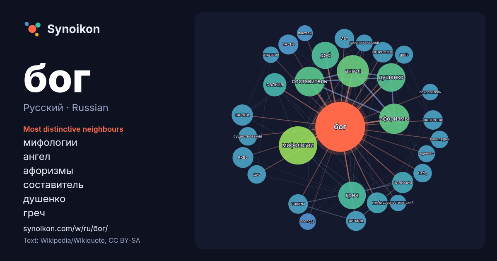

Русский · Russian · popular word
бог
“god” · The words found around it in 1398 instances from Russian Wikipedia, Wikiquote.

Most distinctive neighbours
- мифологии 70×
- ангел 54×
- афоризмы 52×
- составитель 48×
- душенко 46×
- греч 42×
- god 40×
- иллюзия 26×
- яхве 25×
- божество 23×
- неба 23×
- солнца 23×
- пантеона 22×
- докинз 22×
- лат 21×
- θεός 20×
- любви 19×
- gods 19×
- ричард 18×
- имена 18×
× = how many times more often than in general Russian Wikipedia text.
Most frequent neighbours
- мифологии 81
- ангел 57
- афоризмы 51
- составитель 49
- душенко 45
- греч 42
- god 41
- сын 41
- войны 33
- солнца 30
- фильм 27
- иллюзия 25
- любви 25
- неба 24
- яхве 24
- божество 23
- смерти 23
- имена 22
- ричард 22
- докинз 21
In context
- Бог — одно из главных религиозных понятий, объективированная сверхъестественная сущность, могущественное сверхъестественное высшее существо в теистических Wikipedia snippets · Бог
- егип. ḥr.w [ħaːruw] — «недостижимый», «тот, кто высоко») — древнеегипетский бог неба и солнца в облике сокола, человека с головой сокола или крылатого солнца Wikipedia snippets · Гор (бог)
- Олимпи́йцы, Олимпи́йские боги (др.-греч. Ολύμπιοι θεοί), Двенадцатибожие, Додекатеон (др.-греч. Δωδεκάθεον) — в древнегреческой мифологии боги третьего поколения Wikipedia snippets · Олимпийские боги
- Список древнеегипетских богов — список сверхъестественных существ пантеона древних египтян, в который включены боги, богини, обожествлённые понятия, чудовища Wikipedia snippets · Список египетских богов
- Юпи́тер (лат. Iūpiter и лат. Iuppiter) — бог неба, дневного света и грозы в древнеримской мифологии; отец всех богов, верховное божество римлян. Третий сын Wikipedia snippets · Юпитер (бог)
- Бог Отец (греч. Ο Θεός Πατήρ, лат. Deus Pater) — в христианском тринитарном богословии Бог Отец — первая, начальная и причинная ипостась Святой Троицы Wikipedia snippets · Бог Отец
- Триединый Бог Бог Отец Бог Сын Бог Дух Святой Бог в исламе Бог в индуизме Бог-император Дюны Бог (Южный парк) «Бог» — ода Г. Р. Державина. Бог (река) Миллий Wikipedia snippets · Бог (значения)
- Бог в иудаизме — высшая сущность, творец Вселенной, судья и управитель мира и человеческой истории, к которому направлены религиозные почитание, любовь Wikipedia snippets · Бог в иудаизме
More Russian words
- власть
- вода
- деньги
- жизнь
- здоровье
- золото
- искусство
- истина
- история
- климат
- кошка
- мост
- наука
- пища
- поезд
- природа
- работа
- семья
- сердце
- смерть
- собака
- язык
Precomputed on 2026-10-09 with default settings (±5 words, medium corpus). The interactive map can refresh it with live data.